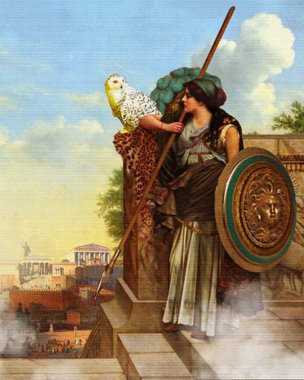

Nữ thần Athéna vô cùng hồ hởi. Nàng lập tức bay ngay từ đỉnh Olympe cao ngất xuống hòn đảo Ithaque, quê hương của người anh hùng có nghìn mưu trí Ulysse. Nàng giả dạng là một người khách lạ, vua của xứ Taphos, tên là Mentès đi vào cung điện của Ulysse.
Tình cảnh gia đình Ulysse lúc này thật rắc rối. Lợi dụng việc Ulysse vắng nhà quá lâu, những chàng trai quý tộc trên đảo ngày ngày đến thúc ép vợ Ulysse, nàng Pénélope khôn ngoan, phải chọn lựa một người trong bọn chúng để tái giá. Bọn chúng đến nhà Ulysse, sai gia nhân của Ulysse giết lợn, giết cừu, giết bò dọn tiệc. Chúng chè chén say sưa hết ngày này qua ngày khác, chờ đợi Pénélope trả lời. Trước tình thế bị thúc ép căng thẳng như vậy, Pénélope đành phải trả lời bọn cầu hôn: Nàng sẽ kén chọn trong số 108 chàng trai quý tộc đây, một người xứng đáng nhất để làm chồng, nhưng nàng xin với các vị cầu hôn đầy nhiệt tình hãy cho phép nàng dệt xong tấm vải liệm cho bố chồng nàng, cụ già Laerte đang gần đất xa trời. Có làm xong nghĩa vụ với bố chồng, nàng mới yên tâm tái giá, bằng không nàng sẽ mang tiếng xấu với bà con, họ hàng trên đảo Ithaque. Các vị cầu hôn đành phải chấp thuận lời thỉnh cầu khôn ngoan đó của nàng Pénélope. Nàng Pénélope bắt tay vào dệt tấm vải liệm cho bố chồng. Ban ngày nàng dệt nhưng ban đêm lại sai nữ tì đốt đuốc để nàng tháo, gỡ tấm vải ra. Cứ thế, nàng dệt mãi, dệt mãi, suốt ba năm ròng mà tấm vải không xong, nhưng đến năm thứ tư, bọn cầu hôn, do được một tên nữ tỳ phản bội báo cho biết, liền ập đến bắt quả tang. Chúng khiển trách Pénélope và buộc nàng phải dệt cho xong tấm vải mặc dù lòng nàng không muốn chút nào. Giờ đây đã đến lúc Pénélope không thể lẩn tránh việc trả lời bọn cầu hôn. Ngay cha mẹ nàng cũng thúc giục nàng tái giá bởi vì các cụ không tin Ulysse còn sống để trở về.

nữ thần Athéna
Ngày nay, trong văn học thế giới có thành ngữ Công việc của Pénélope (Le travail de Pénélope) hoặc Tấm vải của Pénélope (La toile de Pénélope) để chỉ một việc làm cần cù, kiên nhẫn, hoặc để chỉ một việc làm cần cù kiên nhẫn nhưng không đem lại một kết quả, một lợi ích gì.
Khi nữ thần Athéna đặt chân đến trước cửa cung điện của Ulysse thì nàng thấy bọn cầu hôn đang ngồi chơi cờ trước sân. Các gia nhân đang dọn tiệc. Télémaque là người đầu tiên trông thấy nữ thần Athéna dưới dạng một người khách lạ từ phương xa tới. Cậu vội chạy đến niềm nở chào khách và mời khách vào dự tiệc. Bọn cầu hôn bước vào bàn tiệc ngồi thành một hàng dài trên các ghế tựa. Sau khi ăn uống no say, chúng ra lệnh cho nghệ nhân Phémios ca hát để cho bữa tiệc thêm vui. Chính trong lúc đó, lúc bọn cầu hôn đang mải nghe hát, Télémaque mới ghé sát vào tai Mentès, kể cho người khách lạ từ phương xa tới biết tình cảnh gia đình của mình, và cũng chỉ đến lúc này cậu mới hỏi tên tuổi, lai lịch của vị khách quý.
Khách tự xưng là Mentès, cai quản những người Taphos, xưa kia đã từng quen biết, giao thiệp với Ulysse. Khách tỏ vẻ ngạc nhiên trước hình dáng và khuôn mặt của Télémaque sao mà giống hệt như người cha danh tiếng của cậu. Trước tai họa đang đe dọa gia đình Ulysse: Bọn cầu hôn phá hoại tài sản, thúc ép Pénélope phải lựa chọn một người trong bọn chúng để tái giá, còn Pénélope thì thân cô thế cô không biết nương tựa vào ai để bênh vực nên cũng không có gan đương đầu với chúng, đòi chúng phải chấm dứt những hành động ngang ngược, Mentès khuyên Télémaque hãy triệu tập Đại hội Nhân dân tuyên bố cho mới người biết rõ ý định của mình: Đòi chấm dứt cầu hôn, chấm dứt phá hoại tài sản và thúc ép Pénélope. Mentès còn khuyên Télémaque sắm sửa thuyền bè để lên đường đi Pylos, xứ sở của lão vương Nestor và Sparte đô thành của người anh hùng Ménélas để hỏi thăm tin tức về người cha thân yêu của mình. Khuyên bảo Télémaque xong, nữ thần Athéna dưới hình dạng Mentès liền vụt biến đi như một con chim. Nàng vội vã ra đi, khước từ cả tặng phẩm của Télémaque dâng nàng để bày tỏ lòng hiếu khách và biết ơn những lời dạy bảo và khích lệ của nàng. Tuy nữ thần không ở bên Télémaque được bao lâu song nàng đã đặt vào trái tim cậu sự dũng cảm, lòng quả quyết và nỗi nhớ thương người cha da diết. Thấy vị khách của mình ra đi vội vã và kỳ diệu như vậy, Télémaque vô cùng sửng sốt, ngạc nhiên. Cậu ngẫm nghĩ và chợt hiểu ra rằng đó là một vị thần đã đến truyền phán cho mình những điều chỉ dẫn quý báu.
Sáng hôm sau, Télémaque cho truyền lệnh đi khắp đảo triệu tập những người Achéens tóc dài đến quảng trường. Chẳng mấy chốc nhân dân đã kéo nhau đến tụ tập đông đủ. Télémaque đi đến cuộc họp với dáng điệu uy nghi, đẹp đẽ như một vị thần. Cậu cầm trong tay một ngọn lao đồng và theo sau cậu là hai con chó to lớn, đẹp đẽ đi hộ tống. Mọi người đều dõi nhìn theo cậu cho đến khi cậu ngồi vào chỗ của Ulysse thường ngồi trong các cuộc hội nghị xưa kia.
Cuộc họp bắt đầu, cụ già Égyptos đứng lên khai mạc:
- Hỡi nhân dân Ithaque, xin hãy nghe ta nói. Đã lâu lắm rồi kể từ ngày thủ lĩnh Ulysse của chúng ta xuống thuyền lên đường sang thành Troie tham dự chinh chiến chúng ta chẳng có họp hành gì. Hôm nay, chúng ta được triệu tập đến đây để làm gì? Ai ra lệnh? Liệu có một ai đó đem lại một tin tức chắc chắn gì về hành trình trở về của đoàn chiến thuyền chúng ta dưới sự chỉ huy của Ulysse không? Hay chúng ta đến đây để bàn luận về một điều công ích gì khác? Dù sao thì ta cũng nghĩ rằng người triệu tập cuộc họp này thật là nhiệt thành và khôn ngoan. Cầu xin thần Zeus ban cho hội nghị sự thành công tốt đẹp, kết quả mỹ mãn.
Télémaque đứng lên giữa hội nghị, tay cầm cây vương trượng. Cậu cất tiếng nói dõng dạc tố cáo bọn cầu hôn là phá hoại tài sản của gia đình cậu, thúc ép mẹ cậu phải tái giá. Cậu tiếc rằng không có người nào như Ulysse đứng ra để bênh vực cho gia đình cậu, còn cậu, thì chưa đủ sức lực và tài năng để làm việc đó. Télémaque xin nhân dân Ithaque bảo vệ gia đình cậu và ngăn chặn hành động bạo ngược, lộng hành của bọn cầu hôn. Cậu cầu thần Zeus, đấng phụ vương của thế giới Olympe và nữ thần Thémis uyên thâm là người triệu tập và giải tán cuộc hội họp của nhân dân, bênh vực gia đình cậu, chấm dứt nỗi đau thương của gia đình cậu... Télémaque nói với một nỗi tức giận ghê gớm trong tim, nước mắt giàn giụa. Nói xong, cậu vứt cây vương trượng xuống đất và ngồi xuống. Toàn thể nhân dân đều thương cảm cho tình cảnh gia đình của người anh hùng Ulysse. Không một ai dám đứng lên dùng những lời lẽ thô bạo để đáp lại sự tố cáo của Télémaque, bênh vực bọn cầu hôn. Chỉ có tên cầu hôn Antinoos là người dám đối lại. Hắn tuyên bố, những chàng trai quý tộc người Achéens đi cầu hôn sẽ nhất quyết không rời cung điện của Ulysse chừng nào mà nàng Pénélope không từ bỏ ý định lừa dối họ, và nếu Pénélope cho đến lúc này còn nuôi hy vọng có thể lừa dối được họ thì quả thật sự tính toán đó không đúng chút nào. Hắn đòi Télémaque phải dẫn mẹ đến hội nghị này, bắt mẹ phải chọn một người đàn ông Achéens mà bà ta ưng ý làm chồng. Chừng nào mà Pénélope chưa quyết định thì chừng đó những người Achéens cầu hôn còn tiếp tục đến ăn uống, chè chén tại cung điện của Ulysse. Télémaque vô cùng phẫn nộ trước thói ngạo mạn của Antinoos. Cậu khấn thần Zeus, xin thần chứng kiến cho hành động vô đạo của bọn cầu hôn và xin thần hãy trừng trị tội ác đó.
Từ đỉnh Olympe cao ngất bốn mùa mây phủ, thần Zeus nghe thấy hết những lời cầu xin của Télémaque. Lập tức thần liền phái ngay hai con chim đại bàng lao về phía đảo Ithaque nơi đang diễn ra cuộc hội nghị nhân dân. Từ đỉnh núi cao chót vót, hai con chim bay đi nhanh như gió thổi, phút chốc đã tới quảng trường đang ồn ào tiếng người. Chúng lượn trên quảng trường và phóng những tia mắt dữ tợn xuống hàng bao cái đầu đang ngửng lên nhìn chúng, như muôn gieo chết chóc xuống. Thế rồi hai con đại bàng bỗng đâm bổ vào nhau, dùng mỏ nhọn, móng sắc cắn xé nhau, máu chảy đầm đìa. Sau đó chúng biến mất sau những mái nhà và đô thành cao ngất trước sự ngạc nhiên và lo sợ của mọi người.
Lúc đó, lão anh hùng Halitherses, con trai của Mastor, đứng lên, cất tiếng nói dõng dạc trước hội nghị. Lão cho biết đó là điềm báo Ulysse sẽ trở về và sẽ trừng trị những kẻ đã xúc phạm đến gia đình, vợ con và phá hoại tài sản của người. Lão kêu gọi mọi người hãy tìm cách ngăn chặn, chấm dứt thói bạo ngược của những kẻ cầu hôn, nhưng bọn cầu hôn không nghe lời khuyên nhủ của lão. Tên cầu hôn Eurymaque lại còn nhạo báng cụ, đuổi cụ về nhà mà trổ tài tiên đoán, bói toán cho các con em. Chưa hết, tên cầu hôn Léocrite còn ngỗ ngược, hắn thách thức, đe đọa, nếu như Ulysse may mắn còn sống sót mà đặt chân lên mảnh đất Ithaque này với hy vọng đánh đuổi được những người Achéens cầu hôn, khôi phục lại quyền thế và tài sản thì ngày trở về của Ulysse chẳng phải là ngày vui mừng của cảnh đoàn tụ với gia đình. Một mình Ulysse không thể nào địch được những chàng trai Achéens cầu hôn. Ngày đó chỉ có thể là ngày kết thúc số phận của Ulysse một cách nhục nhã, và Léocrite ra lệnh cho hội nghị giải tán.
Thế là hội nghị nhân dân chẳng giúp đỡ được chút gì cho Télémaque. Những tiếng nói chân thành, thẳng thắn bênh vực Télémaque đều bị những tên cầu hôn hung hăng trấn áp. Ngay việc Télémaque xin cấp một con thuyền với hai mươi tay chèo để đi hỏi thăm tin tức về người cha thân yêu của mình, nếu đích thực người đã chết thì cậu sẵn sàng để mẹ cậu đi lấy chồng, cũng không được. Tình cảnh thật là hỗn loạn. Bọn cầu hôn lại kéo nhau về cung điện của Ulysse chè chén, tiệc tùng, còn những người Achéens khác ai về nhà người ấy. Riêng Télémaque rất buồn. Cậu một mình đi ra bờ biển có bãi cát trắng dài, giơ tay lên trời cầu khấn nữ thần Athéna giúp đỡ.
Nghe tiếng Télémaque cầu khấn, nữ thần Athéna có đôi mắt sáng long lanh liền hiện ra cách Télémaque không bao xa. Nữ thần hóa mình thành Mentor, một người bạn không thể chê trách được của Ulysse. Ulysse trước khi xuống thuyền lên đường sang thành Troie đã tin cẩn nhờ cậy, giao phó cho Mentor trông nom gia đình hộ mình. Nữ thần Athéna dưới hình dạng Mentor khuyên Télémaque hãy để mặc bọn cầu hôn. Sự hỗn xước ngạo mạn của chúng sẽ chỉ làm cho ngày tận số của chúng đến gần. Nữ thần hứa sẽ lo liệu thuyền bè cho cuộc hành trình của Télémaque.
Trở về nhà, Télémaque gọi người vú già Euryclée đến nói cho bà biết ý định đi tìm cha của mình. Cậu giao cho bà trách nhiệm trông nom, săn sóc người mẹ kính yêu của cậu và phải hết sức giữ kín chuyện cậu ra đi. Vú già Euryclée van xin Télémaque hãy từ bỏ ý định đó. Bà lo lắng cho tính mạng của cậu, người con trai của Ulysse danh tiếng lẫy lừng, nhưng không gì cản trở được ý chí của Télémaque.
Trong khi đó, nữ thần Athéna biến mình thành Télémaque đi vào thành phố. Nàng gặp người này, người khác bắt chuyện với họ, cổ vũ họ tham gia vào cuộc hành trình đi hỏi thăm tin tức của Ulysse. Nàng đến gặp Noémon, người con trai danh tiếng của Phronios hỏi mượn một con thuyền, và Noémon đã sẵn sàng cho mượn. Khi mặt trời lặn, đường phố chìm trong bóng tối, nữ thần Athéna bèn kéo con thuyền ra bờ biển. Cùng lúc đó những tay chèo sẵn lòng tham dự cuộc hành trình với Télémaque lần lượt đến tụ tập bên con thuyền. Xong việc đó, nữ thần Athéna lại trở về cung điện của Ulysse. Bằng tài năng và pháp thuật của mình, nàng lọt vào cung điện mà không ai nhìn thấy. Nàng dội xuống mi mắt của bọn cầu hôn cơn buồn ngủ nặng chĩu, và thế là bọn cầu hôn, rượu uống say mềm, buông tay khỏi cốc, ngật ngà ngật ngưỡng đứng dậy trở về nhà trong thành phố để ngủ. Chúng chỉ vừa mới nằm vật xuống giường là ngủ say như chết. Nữ thần Athéna dưới hình dạng và tiếng nói của Mentor bèn đến gọi Télémaque lên đường.
Ở bờ biển, các tay chèo đã sẵn sàng. Télémaque tới thuyền cho mọi người chuyển lương thực xuống thuyền. Khi mọi việc đã xong xuôi, nữ thần Athéna dưới hình dạng Mentor dắt tay người con trai của Ulysse xuống thuyền. Nữ thần ngồi ở đằng lái, Télémaque ngồi kế bên. Thuyền rời bến. Một cơn gió tuyệt diệu do nữ thần Athéna khơi lên đưa con thuyền lướt nhanh ra giữa biển khơi mênh mông sóng nước.